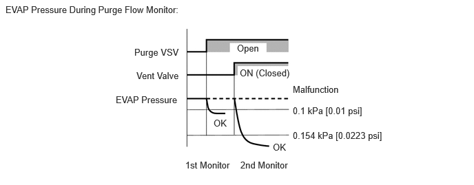

- Purge VSV stuck closed
- Check valve stuck closed
- Insufficient purge flow
| Last Modified: 10-07-2025 | 6.11:8.1.0 | Doc ID: RM100000002KD53 |
| Model Year Start: 2024 | Model: Tacoma HV | Prod Date Range: [03/2024 - ] |
| Title: T24A-FTS (ENGINE CONTROL): SFI SYSTEM (for 1Motor-HEV Model): P04419C; Evaporative Emission System Incorrect Purge Flow Low/Insufficient Flow; 2024 - 2026 MY Tacoma HV [03/2024 - ] | ||
|
DTC |
P04419C |
Evaporative Emission System Incorrect Purge Flow Low/Insufficient Flow |
DTC SUMMARY
|
DTC No. |
Detection Item |
DTC Detection Condition |
Trouble Area |
MIL |
DTC Output from |
Priority |
Note |
|---|---|---|---|---|---|---|---|
|
P04419C |
Evaporative Emission System Incorrect Purge Flow Low/Insufficient Flow |
The following conditions are met successively while the engine is running:
|
|
Comes on |
Engine |
B |
|
|
DTC No. |
Monitoring Item |
Detection Timing |
Detection Logic |
SAE |
|---|---|---|---|---|
|
P04419C |
|
While engine running |
2 trip |
P0441 |
DESCRIPTION
Refer to EVAP (Evaporative Emission) System.
Click here
![2024 - 2026 MY Tacoma HV [03/2024 - ]; T24A-FTS (ENGINE CONTROL): SFI SYSTEM (for 1Motor-HEV Model): EVAP System+](../../../../stylegraphics/info.gif)
MONITOR DESCRIPTION
The purge flow monitor consists of 2 monitors. The 1st monitor is conducted every time and the 2nd monitor is activated if necessary.
- The 1st monitor
While the engine is running and the purge VSV is on (open), the ECM monitors the purge flow by measuring the EVAP pressure change. If negative pressure is not created, the ECM begins the 2nd monitor.
- The 2nd monitor
The vent valve is turned on (closed) and the EVAP pressure is then measured. If the variation in the pressure is less than 0.154 kPa [0.0223 psi], the ECM interprets this as the Purge VSV being stuck closed. The ECM illuminates the MIL and stores DTC P04419C (2 trip detection logic).
Atmospheric pressure check:
In order to ensure reliable malfunction detection, the variation in atmospheric pressure, before and after performing the purge flow monitor, is measured by the ECM.
MONITOR STRATEGY
|
Required Sensors/Components (Main) |
Purge VSV Canister pump module |
|
Required Sensors/Components (Related) |
- |
|
Frequency of Operation |
Once per driving cycle |
|
Duration |
Within 30 seconds |
|
MIL Operation |
2 driving cycles |
|
Sequence of Operation |
None |
TYPICAL ENABLING CONDITIONS
|
Engine |
Running |
|
Engine coolant temperature |
4.4°C (39.9°F) or higher |
|
Intake air temperature |
4.4°C (39.9°F) or higher |
|
Pressure sensor of canister pump module malfunction (P0451, P0452, P0453) |
Not detected |
|
Purge VSV |
Not operated by scan tool |
|
EVAP system check |
Not operated by scan tool |
|
Auxiliary battery voltage |
10 V or higher (varies with intake air temperature) |
|
Purge duty-cycle |
8% or higher |
TYPICAL MALFUNCTION THRESHOLDS
|
Both of the following conditions are met |
- |
|
EVAP pressure change when purge flow is started |
Less than 0.1 kPa [0.01 psi] |
|
EVAP pressure change during purge flow when vent valve is on (closed) |
Less than 0.154 kPa [0.0223 psi] |
MONITOR RESULT
Refer to EVAP System.
Click here
CONFIRMATION DRIVING PATTERN
HINT:
- After repair has been completed, clear the DTC
and then check that the vehicle has returned to
normal by performing the following All Readiness
check procedure.
Click here
- When clearing the permanent DTCs, refer to the
"CLEAR PERMANENT DTC" procedure.
Click here
- Clear the DTCs (even if no DTCs are stored, perform the clear DTC procedure).
- Turn the ignition switch off and wait for at least 30 seconds.
- Put the engine in Inspection Mode (for measuring
Exhaust Gas).
Click here
- Start the engine and wait 15 minutes or more [A].
- Enter the following menus: Powertrain / Engine / Trouble Codes [B].
- Read the pending DTCs.
HINT:
- If a pending DTC is output, the system is malfunctioning.
- If a pending DTC is not output, perform the following procedure.
- Enter the following menus: Powertrain / Engine / Utility / All Readiness.
- Input the DTC: P04419C.
- Check the DTC judgment result.
HINT:
- If the judgment result is NORMAL, the system is normal.
- If the judgment result is ABNORMAL, the system is malfunctioning.
- [A] to [B]: Normal judgment procedure.
The normal judgment procedure is used to complete DTC judgment and also used when clearing permanent DTCs.
- When clearing the permanent DTCs, do not disconnect the cable from the auxiliary battery terminal or attempt to clear the DTCs during this procedure, as doing so will clear the universal trip and normal judgment histories.
CAUTION / NOTICE / HINT
NOTICE:
- Vehicle Control History may be stored in the
hybrid vehicle control ECU assembly if the engine is
malfunctioning. Certain vehicle condition information
is recorded when Vehicle Control History is stored.
Reading the vehicle conditions recorded in both the
freeze frame data and Vehicle Control History can be
useful for troubleshooting.
(Select Powertrain in Health Check and then check the time stamp data.)
- If any "Engine Malfunction" Vehicle Control History item has been stored in the hybrid vehicle control ECU assembly, make sure to clear it. However, as all Vehicle Control History items are cleared simultaneously, if any Vehicle Control History items other than "Engine Malfunction" are stored, make sure to perform any troubleshooting for them before clearing Vehicle Control History.
HINT:
If the cable is disconnected from the auxiliary battery terminal, the fuel vapor-containment valve cannot close completely and an EVAP SYSTEM DTC will be stored. If the DTC is output, drive the vehicle at a speed of 10 km/h (6 mph) or more and then leave the vehicle for 30 seconds or more. Then perform the Evaporative System Check again.
PROCEDURE
PROCEDURE
|
1. |
CHECK ANY OTHER DTCS OUTPUT (IN ADDITION TO DTC P04419C) |
(a) Read the DTCs.
Powertrain > Engine > Trouble Codes
|
Result |
Proceed to |
|---|---|
|
P04419C and other DTCs are output |
A |
|
P04419C is output |
B |
HINT:
If any DTCs other than DTC P04419C are output, troubleshoot those DTCs first.
| A |  |
GO TO DTC CHART |
| B | |